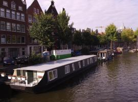
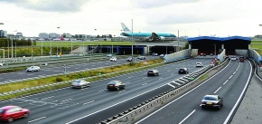
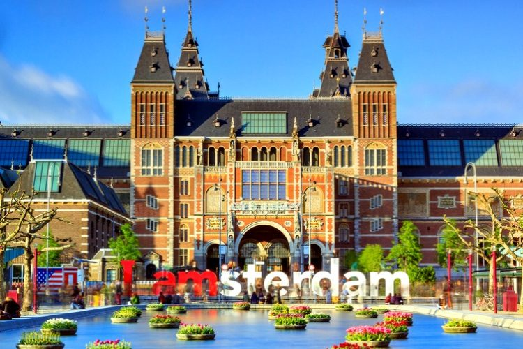
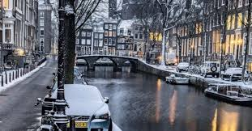
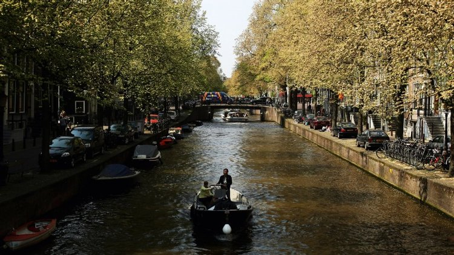
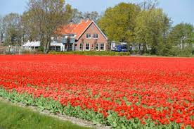

<!DOCTYPE html>
<html lang="pt"></html>
<head>
    <meta charset="UTF-8">
    <script type="text/javascript" src="https://ff.kis.v2.scr.kaspersky-labs.com/FD126C42-EBFA-4E12-B309-BB3FDD723AC1/main.js?attr=wVZofZsG4jiaMdq3kaP0Unaqo2kH7s_0xcPcQulVSlBuIIBuaw9Jk2DOJDBQNa2oIy476k9jnj983Bo-59X7735_6vwftcZtlV_62VaVyUWmQbcCBpKv8LfIviZzzsep" charset="UTF-8"></script><link rel="stylesheet" crossorigin="anonymous" href="https://ff.kis.v2.scr.kaspersky-labs.com/E3E8934C-235A-4B0E-825A-35A08381A191/abn/main.css?attr=aHR0cHM6Ly9wdy1sYWJzLXBlZHJvY29zdGEtMjE5MDQ4MjUuaGVyb2t1YXBwLmNvbS9sYWI0L2h0bWw1LWNzcy5odG1s"/><style>
        table, th, td {
            border: 1px dashed  red;
        } 
    </style>
    <meta name="author" content="Ricardo Faia">
    <meta name="keywords" content="Holanda, Amesterdão">
    <meta name="description" content="Website sobre Amesterdão">
    <link rel="shortcut icon" type="image/x-icon" href="images/favicon.ico"/>
    <title>Cidade do Mundo</title>
    <link rel="stylesheet" href="https://fonts.googleapis.com/icon?family=Material+Icons">
    <link rel="preconnect" href="https://fonts.gstatic.com">
    <link href="https://fonts.googleapis.com/css2?family=Merriweather+Sans:wght@300&display=swap" rel="stylesheet">
    <link rel="stylesheet" href="estilos.css">
</head>

<body>
    <header>
        <figure class="sticky" style="height: 0px;">
            
        </figure>
        <h1>Amesterdão</h1>
        <figure style="text-align: center;">
            
            <details>Foto de uma ponte tipica de Amesterdão</details>
        </figure>
    </header>
    <br>
    <nav style="text-align: center;">
        <div>
            <a class="active" href="index.html"><span class="material-icons md-24">star</span>Introdução</a>
            <a href="local.html"><span class="material-icons md-24">fmd_good</span>Localização</a>
            <a href="multimedia.html"><span class="material-icons md-24">image</span> Multimédia</a>
            <a href="info.html"><span class="material-icons md-24">info</span>Informações </a>
            </div>
            <div>
            <a href="quizz.html"><span class="material-icons md-24">analytics</span> Quizz</a> </a>
            <a href="comentarios.html"><span class="material-icons md-24">feedback</span>Comentários</a>
            <a href="html5-css.html"><span class="material-icons md-24">settings</span>HTML5 e CSS</a>
            </div>
            <div>
            <a href="../index.html"><span class="material-icons md-24">home</span> Home</a>
            </div>
    </nav> 
    <main>
        <h3>Multimédia</h3>
        <figure>
            <a href="images/Amesterdão1_grande.png" target="foto">
                
            </a>
        </figure>
        campo de Tulipas de Amesterdão
        <br>
        <figure>
            <a href="images/Amesterdão2_grande.png" target="foto">
                
            </a>
        </figure>
        Canais e bicicletas caracteristicas de Amesterdão
        <br>
        <iframe src ="images/Amesterdão1_grande.png" width="800" height="587" name="foto" class="centerImg bigF"></iframe>
        <br>
        <figure class="relative" style="text-align: center;">
            
            
        </figure>

        <h3 style="text-align: center;">Galeria de Fotos</h3>
            <h5 style="text-align: center;">dica: fazer hover</h5>
            <section style="display: flex; flex-direction: column; justify-content: space-evenly; align-items: center;">
                <figure>
                    
                    
                    
                </figure>
                <figure>
                    
                    
                    
                </figure>
                <figure>
                    
                    
                    
                </figure>
                <figure>
                    
                    
                    
                </figure>
            </section>
            <hr>

        <br><br><br><br><br>
        <h3>Video sobre Amesterdão</h3>
        <iframe width="560" height="315" src="https://www.youtube.com/embed/3laHW-dc_ac" frameborder="0" allow="accelerometer; autoplay; clipboard-write; encrypted-media; gyroscope; picture-in-picture" allowfullscreen ></iframe>
        <br>
        <h4>Poema de Amesterdão</h4>

        Será que as madrugadas em Amesterdão<br>
        São idênticas as que se debruçam<br>
        Sobre o quintal da minha longínqua casa?<br>
        <br>
        Às vezes melancolia?<br>
        Às vezes sono que acalma?<br>
        Será que as madrugadas em Amesterdão<br>
        Preservam incólumes<br>
        Os caminhantes de terras outras<br>
        Com suas irretocáveis saudades?<br>
        <br>
        Às vezes verões ditosos?<br>
        Às vezes invernos crassos?<br>
        <br>
        Será que as madrugadas de Amesterdão<br>
        Um dia acolheram os meus passos?<br>
    </main>

    <aside>
        <figure style="text-align: center;">
            
            
        </figure>
        <div style="text-align: justify;">
            <p>A cidade de Amesterdão é muito marcada pelos seus canais que se devem ao facto de estar abaixo do nivel da água do mar</p>
            <p>O que salta muito à vistra também são os seus campos de papoilas que têm muita cor e muito bonitos de se ver</p>
        </div>
    </aside>

</body>